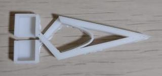

通常のピンセットとは反対の動作をする逆動作ピンセットで、
挟むだけでなくすくうことができる形になっている
ペットの飼育ケージの掃除ですくうことと挟むことが必要になるため
両方が可能な道具が欲しかったため。
操作が逆な理由は掃除で取ったものを離さないようにするため。
初期段階では下のstlで出力した。
逆作動ピンセット v0
しかしこのデータでは戻る力が弱く、隙間ができてしまい、ものを挟むことが難しかった。
そこで次に下のstlのように内側にアーチ構造を追加して戻る力を強くしようとした。
逆作動ピンセット v5

アーチの厚さを0.7mm,1mm,2mmとかえて試したが開くのに力がいるようになるだけで
戻る力が大きくなることはなかった。
方針を変えてピンセットを下のように開いた状態で出力した。
逆作動ピンセット v5
このように出力した後、ピンセットを閉じることによって
戻る力が大きくなり、ものをしっかりと挟めるようになった。